Digital Filter Design Arduino Due
This page combines my EEE 304 extra credit lab write-up with the original lab problem statement. It includes the parts list, Arduino Due setup context, Simulink workflow, hardware diagrams, and my task results.
Download Lab Problem Statement PDF
Download My Lab Report PDF
Filtering with an Embedded Computer
The lab objective was to generate multiple tones on an Arduino Due, route them through different digital filters, and identify the active filter behavior by listening to the output on headphones. The supporting Simulink models handled signal generation, filtering logic, and deployment to the embedded target.
Bill of Materials
The original handout specified the minimum hardware needed to build and test the experiment.
| Item | Model / Notes | Quantity |
|---|---|---|
| Arduino | Due | 1 |
| Micro USB cable | Any Android phone charger cable | 1 |
| Headphones | Preferably 20-40 Ohm impedance | 1 |
| Crocodile clips | Optional, only two needed | 2 |
| Digital multimeter | Optional | 1 |
| Jumper wires | Male to male | 10 |
| Breadboard | Any breadboard | 1 |
Arduino Due Context
The experiment used an Arduino Due, a 32-bit ARM Cortex-M3 board with both ADC and DAC capability. That mattered because the audio path depended on the DUE DAC output range and its practical current limits when driving headphones.
The handout emphasized two constraints: the board operates at 3.3 V logic, and the DAC should not be overloaded with low-impedance speakers. For this lab, headphones in roughly the 20-40 Ohm range were acceptable.
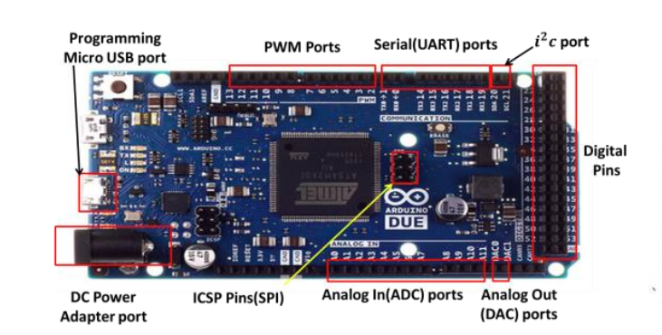
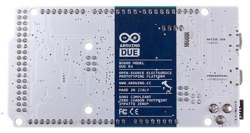
Software Preparation
Before building the signal path, the Arduino support package had to be installed in MATLAB / Simulink and the model configured to run on Arduino Due hardware. The flow in the handout was:
- Install the Arduino IDE and drivers for the programming port.
- Install the Simulink support package for Arduino hardware.
- Prepare a Simulink model to run on target hardware.
- Select Arduino Due as the hardware board.
- Set serial baud rates to 115200.
- Configure the solver with a fixed-step discrete setup matching the sample rate.
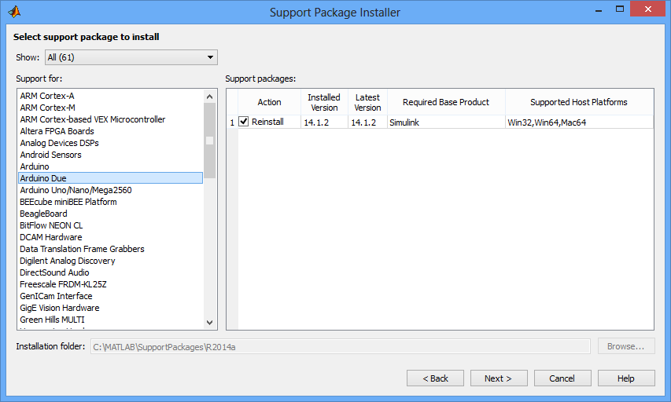
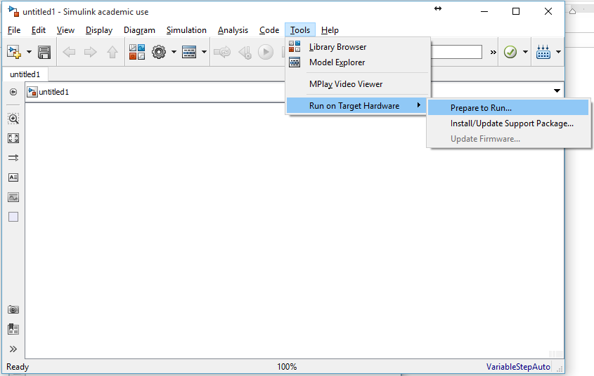
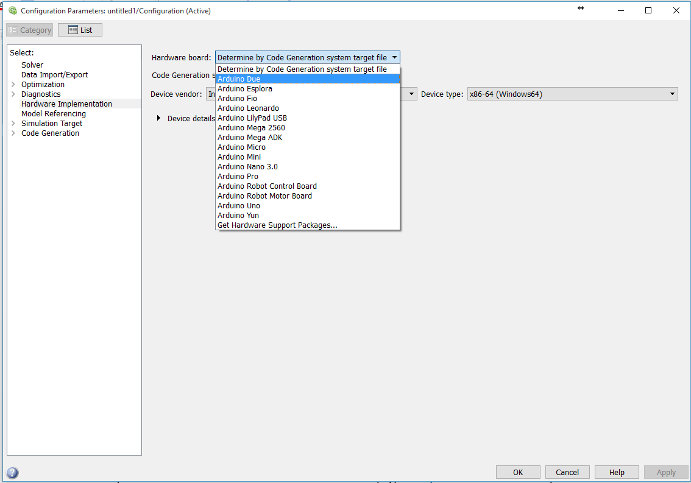
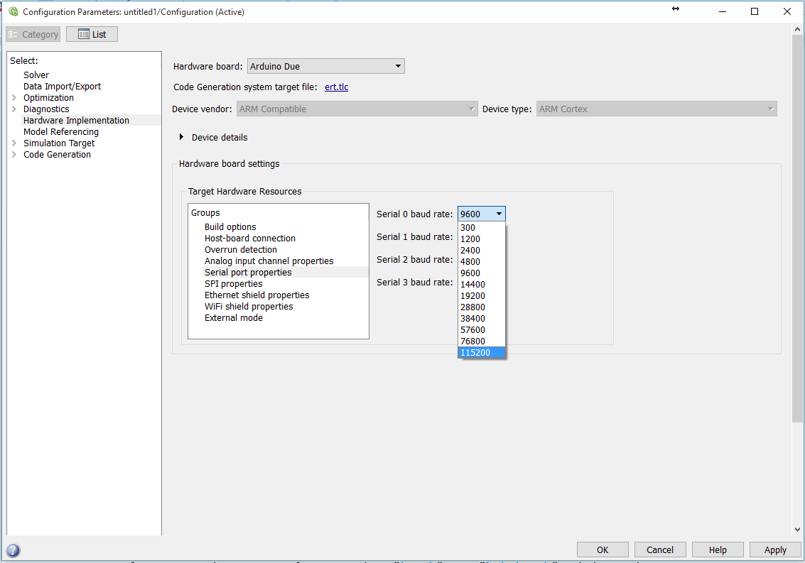
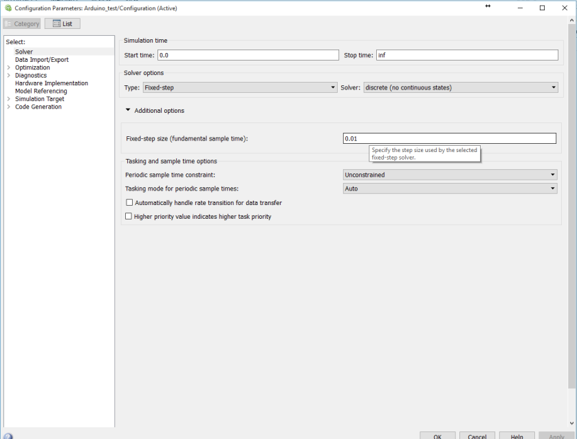
Hardware Build and Signal Path
The physical setup was intentionally simple: Arduino Due, headphones, jumper wires, and optional clips. The DAC output drove one headphone channel while ground was shared with the board.
The handout also called out a practical measurement step before connection: use a meter to confirm the headphone impedance is safe for the DUE output stage, and verify the headphone plug terminals before wiring.
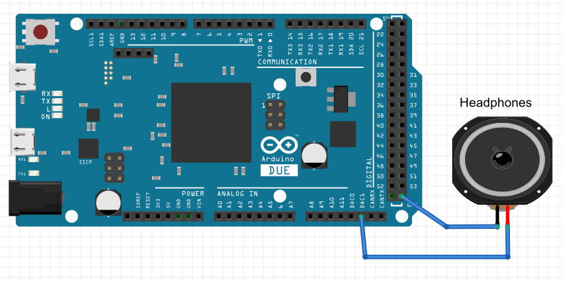
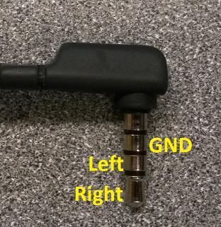
Provided Simulink Models
The lab did not require building every model from scratch. The provided Simulink files established the test signal, generated the audio tones, and then switched filter behavior based on the digital input states of pins 7 and 8.
Arduino Test Model
The first test confirmed the toolchain and board link were working by driving a PWM output with a sinusoid and logging data to the MATLAB workspace.
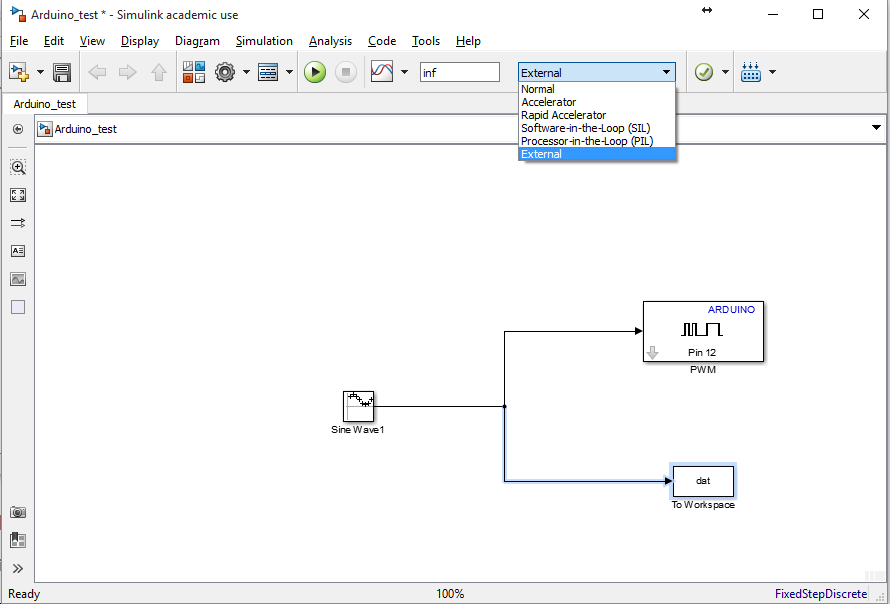
Tone Generation Model
The main experiment summed 80 Hz, 200 Hz, 500 Hz, and 800 Hz tones, shifted the waveform upward for the positive-only DAC range, and scaled it before sending it to the DUE analog output.
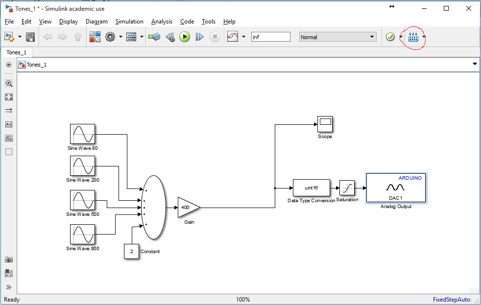
Filter Switching Model
A second provided model used the state of pins 7 and 8 to route the summed signal through one of several filter paths: pass-through, low-frequency band-pass, high-frequency band-pass, or a stop configuration that suppresses all tones.
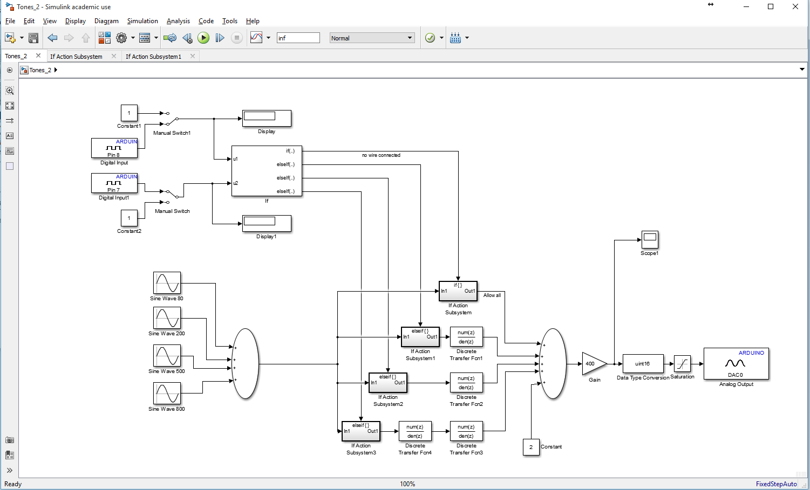
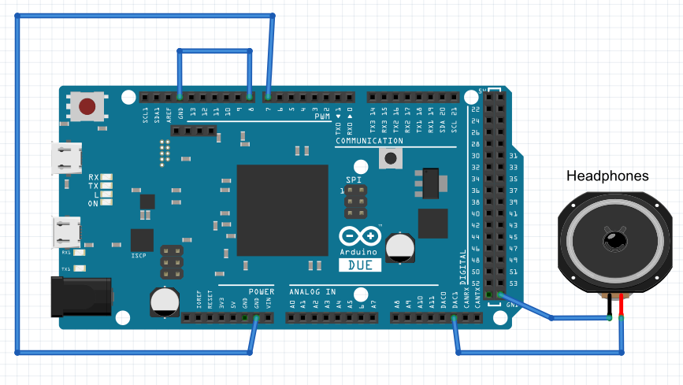
My Lab Results
After working through the provided setup and hardware flow, I documented the required task outputs below.
Task 1
Initial waveform captured from the Arduino test model after plotting the saved workspace data.
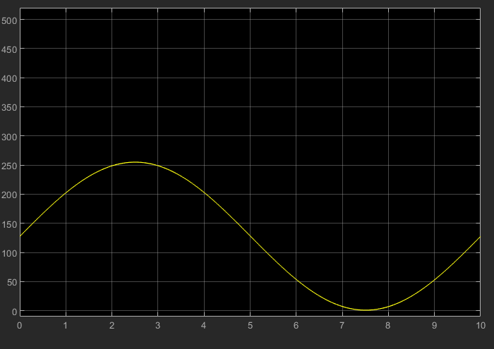
Task 2
Question: Does the audio heard on the headphone sound like it is a single tone or a mixture of frequencies?
It sounds like a mixture of frequencies.
Task 3
Based on the filter selection behavior, I identified the audible result for each pin configuration as follows.
| Pin 7 | Pin 8 | Frequencies Heard |
|---|---|---|
| Not Grounded | Not Grounded | All |
| Grounded | Not Grounded | Low |
| Not Grounded | Grounded | High |
| Grounded | Grounded | None |
Task 4
Hardware setup photo from my completed experiment.
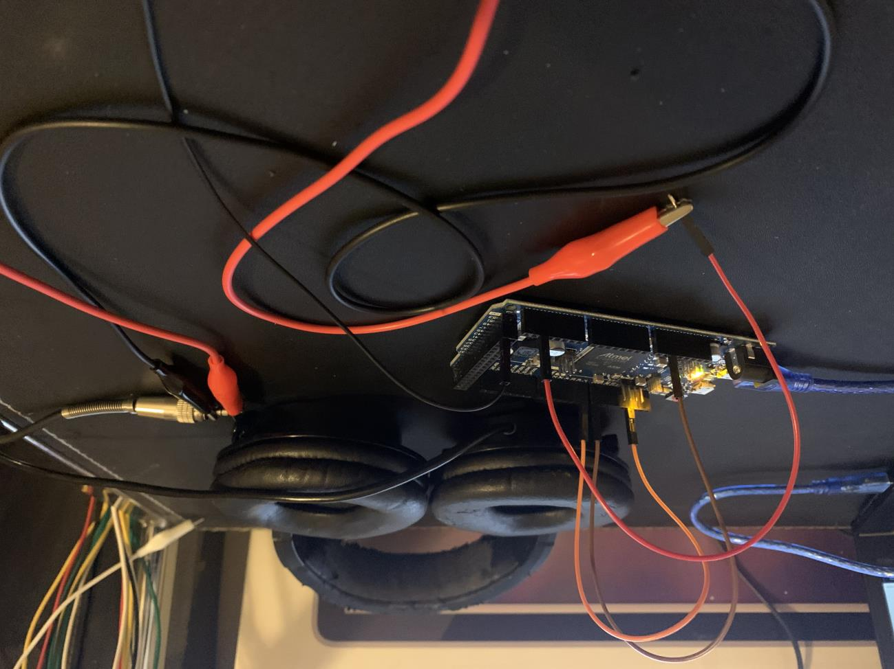
Task 5
I used fourth-order Butterworth filters at a 5 kHz sampling rate to recreate the three requested responses: a stop filter, a low-frequency band-pass, and a high-frequency band-pass.
figure(1)
[b,a] = butter(4,[0.01 0.99],'stop');
freqz(b,a)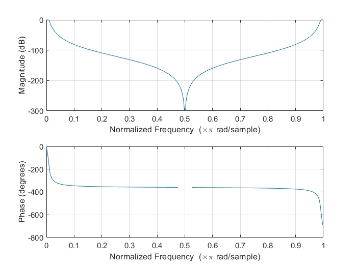
figure(2)
n = 4;
Wn = [80 200]/(5000/2);
ftype = 'bandpass';
[b,a] = butter(n,Wn,ftype);
freqz(b,a)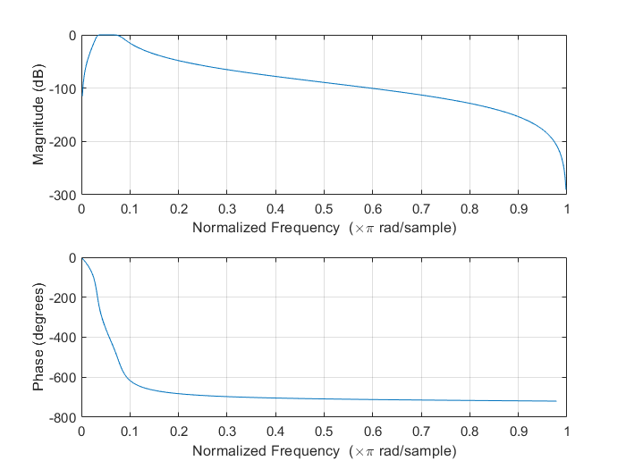
figure(3)
n = 4;
Wn = [500 800]/(5000/2);
ftype = 'bandpass';
[b,a] = butter(n,Wn,ftype);
freqz(b,a)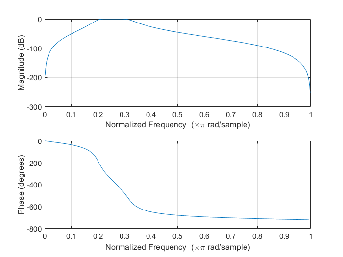